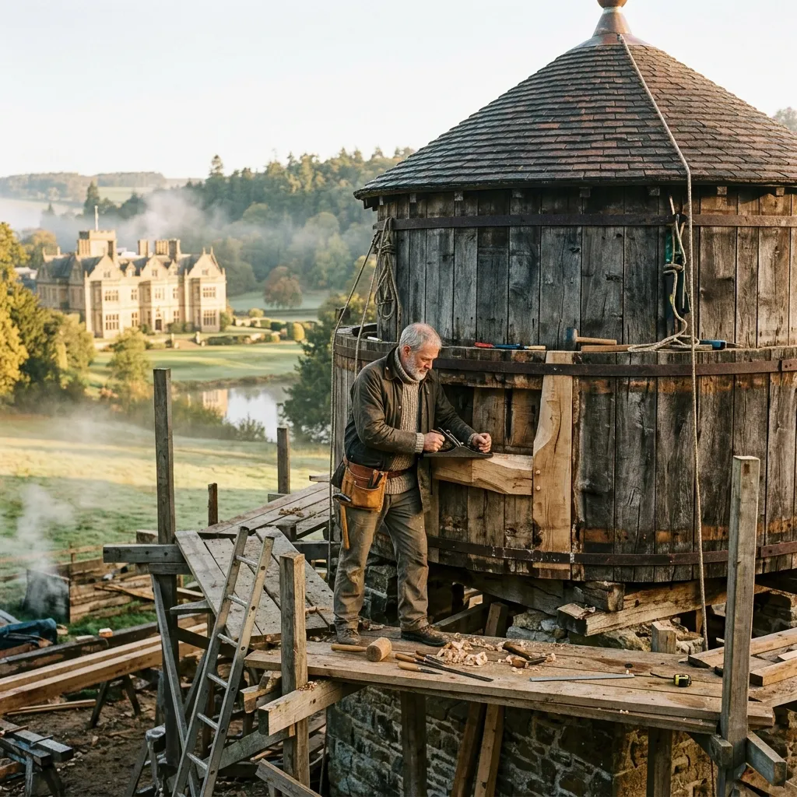
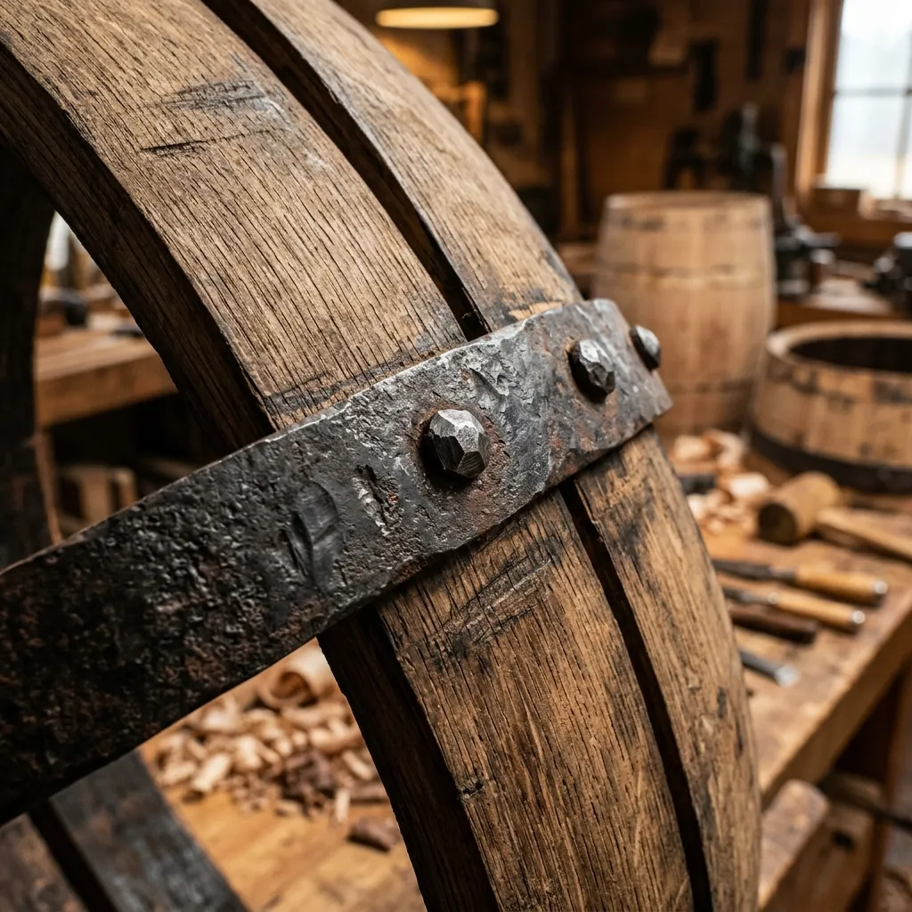

Restoring Heritage Timber Water Towers and Stave Silos Across Britain
Stave & Hoops Millwright Guild combines traditional timber steam-bending with a shared master-artisan pool to preserve historic agricultural structures.
A century-old wooden water tower or stave silo is an extraordinary piece of vernacular engineering, held together purely by precise compound bevels and the relentless compression of wrought iron hoops. When dry rot or iron fatigue threatens these landmark structures, finding specialized millwrights with seasoned heartwood oak can take years. Through our cooperative guild reserve, historic estate stewards pool rare timber stocks, mobile steam rigs, and master craftspeople to keep Britain’s rural architectural heritage watertight.

Timber Bending Mechanics & Fractional Guild Stewardship
Unlike modern straight-grained joinery, shaping a curved water tank stave requires quarter-sawn English oak milled with exacting compound bevels along every edge. Each stave must match the curvature of the tank while providing a tongue-and-groove profile that expands when wet, creating a natural hydrostatic seal without synthetic caulking or chemical glues. Our master millwrights steam each three-inch oak plank for hours in mobile steam boxes, hand-bending the softening timber over heavy curved jigs before clamping it into position.
Maintaining a permanent staff of specialized stave millwrights and holding decades of seasoned heartwood is financially impossible for an individual estate or small farm trust. Through the Stave & Hoops Guild, member estates share ownership of a central timber reserve in Stroud, holding over forty thousand super-feet of air-dried oak and Douglas fir heartwood. When a water tower in Somerset or a grain silo in Herefordshire requires urgent re-hooping, our itinerant workshop rig deploys directly to the site within forty-eight hours.
By fractionalizing access to rare timber stock and specialized hydraulic hoop-tensioning equipment, member trusts reduce restoration overhead by over forty percent while ensuring every repair strictly meets Grade I listed building preservation standards. Our guild stewards receive annual structural health audits, emergency stave allocations, and dedicated master-artisan hours—preserving historic timber architecture for the next century.
Specialized Structural Restoration Services
Traditional woodworking precision backed by modern structural engineering certification for Grade I and II* listed agricultural towers.
Stave Replacement & Joint Recaulking
We source air-dried white oak, steam-bending replacement staves on-site using precise profile matching. Before dismantling begins, structural timber integrity is assessed utilizing non-destructive micro-drilling, measuring internal rot density without compromising the exterior face.
Hot-Rolled Iron Hoop Forging & Tensioning
Replacement wrought iron hoops are hot-forged and tensioned using hydraulic drivers. Every newly fitted lug and rod assembly is galvanised and treated to prevent galvanic corrosion where iron meets wet timber.
Conical Roof & Timber Cap Repair
Complete structural framing and cedar shingling restoration for silo caps. We reconstruct traditional ventilation louvres to prevent condensation rot while retaining historic architectural aesthetics.
The Shared Timber Reserve & Mobile Workshop
Over 40,000 Super-Feet of Seasoned Heartwood Maintained in Central Reserve.
Central Oak Bank (Stroud)
Our secure warehousing stockpiles rare, wide-board quarter-sawn English Oak and old-growth Douglas Fir. By seasoning timber collectively for over five years, we avoid the catastrophic shrinkage issues common with rushed commercial kiln-drying.
Itinerant Mobile Steam Rig
A fully independent workshop trailer equipped with a diesel steam boiler, hydraulic clamps, and milling machinery. We bring the entire fabrication process directly to the estate, allowing for rapid onsite stave profiling and bending.
Master Millwright Retainer
Instead of hiring unspecialized contractors, guild trusts subscribe to dedicated hours from our highly specialized craftsmen. This shared model ensures museum-quality restoration is affordable for independent rural estates.
Recent Estate Preservation Projects
Stroudwater Flour Mill Water Tower (1892)
This massive overhead reservoir had suffered forty years of neglect, presenting critical structural iron failure. Our team replaced twelve load-bearing Douglas fir staves, employing precise quarter-sawn stock from our reserve. All original ironwork was carefully removed, hot-forged replacements were tensioned, and the tank returned to complete hydrostatic tightness within three weeks.
Somerset Cider Oak Silo (1908)
Restored the conical roof framing and re-tensioned the base iron hoops. We successfully replaced rotting basal staves with aged English white oak, achieving total water retention.
Cotswold Estate Water Storage Array (1885)
Extensive micro-drilling revealed hidden heartwood decay. We executed a full restorative hooping process while preserving the historic timber patination across the entire array.
Requisition a Structural Timber Survey
Book a comprehensive structural survey before minor stave leaks turn into catastrophic wall failures. Our master millwrights aim to conduct onsite assessments within 7 business days.